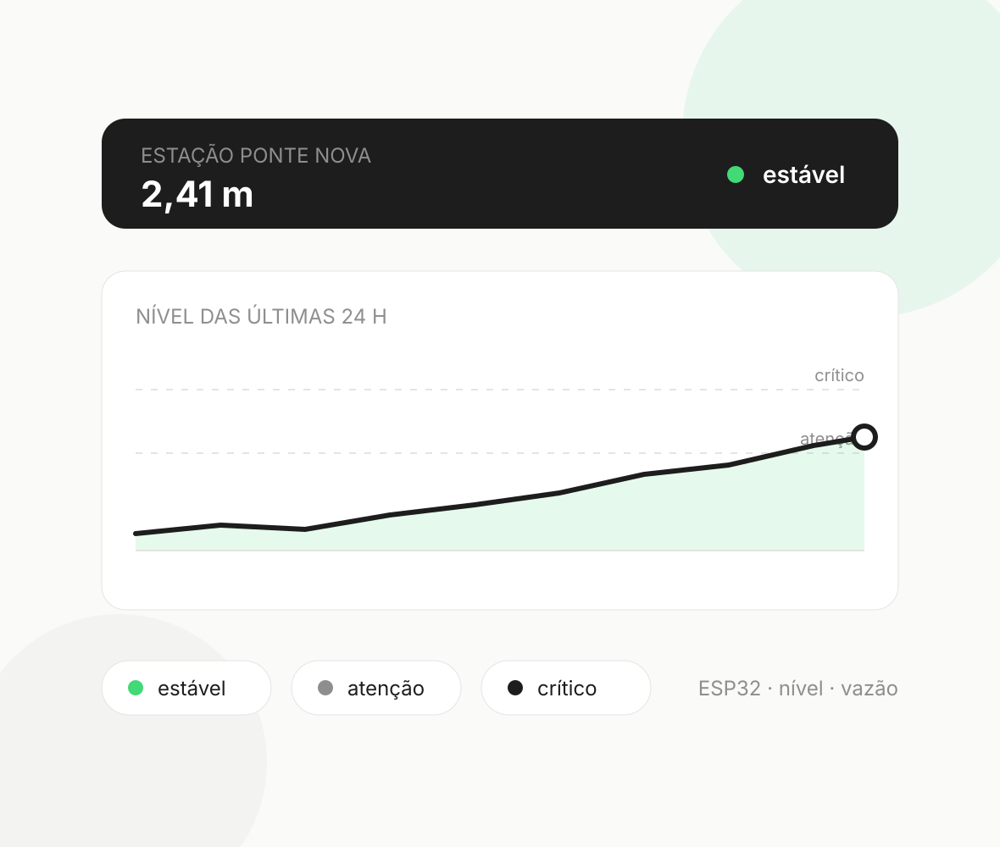

Iniciação científica
AquaScan — monitoramento de rios
Sistema que vai do sensor ao aplicativo. Estações com ESP32 medem nível e vazão do rio, a API classifica o trecho em estável, atenção ou crítico e registra um alerta quando a situação piora. Desenvolvi a API, o banco e o aplicativo, além da rota a pé offline com algoritmo A* sobre um grafo de ruas do OpenStreetMap. Projeto de equipe, apresentado na Supernova (Sebrae/MEC).
- TypeScript
- React Native (Expo)
- Fastify
- Zod
- PostgreSQL
- PostGIS
- Prisma
- Vitest